May 13–14, 2018
The long-awaited day has come. The culmination of the most prominent event if the whole story was upon us. We were excited, but also undeniably sad: the end of the story would go hand-in-hand with the Puppeteer’s disappearance.
During this event, he gradually built up very active interactions with all of us. On the first day, they mainly manifested themselves in occasional emote usage. On the second day, he would listen to our occasional requests and responding to them. On this final day, he joined our voice-chat channel in Discord. While he stayed mute through the whole finale, this allowed him to listen to us experience his final work as closely as possible.
The twilight was upon the Puppet, as it came down from the storming ruins of Archdragon Peak. As rested as such an artificial unliving being could be, it marched on through Irithyll Dungeon’s neglected halls, arriving in the ruins of the Profaned Capital.
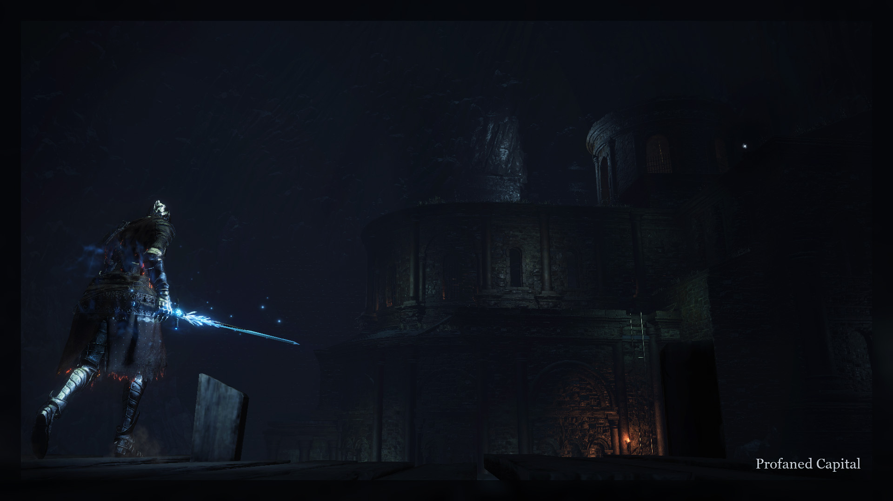It would be here where we would get the final conclusion on the long story of Oden. We have learned of his ancient past as a Lord of Thunder and later Lord of Hail. We saw how he was reinvigorated by his last Slumber. Now, we would once more see the quickly-fading facade of the unimportant hollow vagabond—Oden the Armless.
#176 set the gears into motion, as the Puppet was overcome by yet another apparition. This poem, to no surprise, spoke of the armless wandered in what we have learned to be his darkest times, (which is solidified by #53 and #54 of his slumber).
The Capital’s poems will add just a bit more concreteness atop the already fairly clear story that we have constructed around Oden. We know he was adherent of the Dark, or rather he was an adversary of the Fire. This distaste, in many ways similare to the Father’s, has moved him to actions which culminated in his assault of the Ringed City. There, he fought the Heart of Spears for six days and six nights. The Heart of Spears was subdued, its heart pierced by Oden’s occult spear.
Yet something went wrong—Oden failed in his assault. Perhaps the encounter left him exhausted, and he was overpowered by whatever other forces were left in the city. The cause doesn’t matter much, the result does: Oden, the titan Lord of Thunder, was stripped of his godhood and exiled by the gods of Lordran.
For uncountable years he would be condemned to wander the earth, eventually finding his way to the lands of Lothric. Despite his titanic failure, something of the nobility befitting his origin remained in him, for as Oden fought invaders and hosts deep in the putrid depths of the Dungeon and the Capital, he was still “resolute”(third line of #176).
Yet it’s not a far-fetched idea that his past haunted him, for the very same poem describes him as being “on the run". On the run from what? The gods of Lordran have perished so long ago even the legends about them are slowly being forgotten. And what else could this living relic of antiquity possibly fear?
As the Puppet walked through the same places Oden once fought Nosferat in, it mimicked and adopted the towering cripple to the point of also missing an arm. Seeing how that arm would be back in the very next area, it can hardly be tied into the lore as anything but another little homage to what made Oden’s first iteration unique.
What the Puppet did adopt was cripple’s magic arsenal, though before the boss-fight it consisted only of the Aquamarine Dagger.
This allows us to bring up another curious point. Oden appeared in three wildly different forms, and each was heavily reliant on a single type of elemental damage. Oden the Armless made heavy use of magic-infused weaponry. Slumbering Oden was coated in a layer of frostbite. Lord of Hail’s greatsword struck with lightning, and his spells revolved around storm.
This is curious because none of the characters, aside from the Puppet, have made such leaps in magic affinity. As of now we don’t have a good explanation as to why this is the case with Oden. Perhaps it’s nothing more than the Puppeteer deciding to use Oden to explore a lot of ideas. Perhaps it could be extrapolated that Oden had a natural affinity for various types of magic. The latter idea could have some credit since the character is based on the norse god Odin, who was well-known for his feverous pursuit of all kinds of magical knowledge and wisdom.
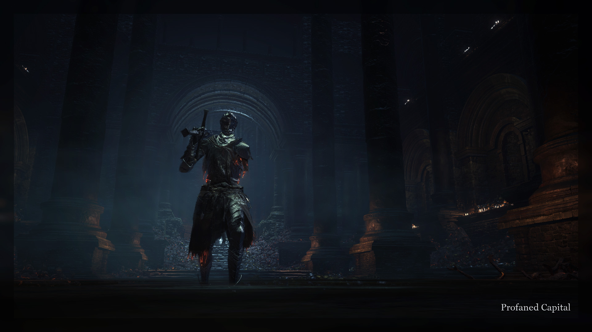Poem #177 tied the final ribbon on Oden’s. In his steady pursuit of what he thought was true, he went against his entire race, because he believed their reasoning to be blind with fear. He was a traitor for a cause that was nobel from his point of view. He suffered for his choices. And yet, in the very end, he likely found peace in knowing that there was someone else, potentially more powerful than he was, working towards the same goal. With that thought, Oden, the titan Lord of Thunder, the Lord of Hail, the Armless, vanished from the stage.
He may have disappeared, but his vague recollections still echoed inside the Puppet’s fragmented mind. As the capital was searched, its last inhabitants consumed for souls, the mute knight approached the large throne room where another tormented lord awaited.
In a fitting manner, the very last setup we saw of Oden was also the very first one we have ever encountered. This boss-fight was very down-to-earth: no custom spells were used, no weird tricks played. Just the temporarily armless Puppet and one of us, duking it out as Yhorm the Giant sat silently and watched.
This did not make for a boring encounter, for the Puppet was aggressive and invasive in its play-style. It was especially ferocious with the Aquamarine Dagger. The weapon’s great strength lies in long comboes it can produce. The Puppet’s enormous stamina pool synergized perfectly with it, since a regular character quickly gets exhausted when swinging this thing.
This is also the fight that produced one of several Puppeteer memes: at some point when either waiting to be teleported into the arena or just after a fight, Narcolept collapsed. The Puppeteer responded with a fairly non-chalant “no collapsing". Many found the timing of the response humorous, and so it stuck around as an inside joke even half a year after the Puppeteer was gone.
#178 was a herald of doom for Yhorm. The giant wasn’t removed from the boss arena, instead being a static observer of the fights that went down in his hall. “Poor sufferer”likely refers to Yhorm’s actual in-game lore, for his story is one of heavy sacrifices for his people.
Noxuary was the last one to fall, with a quick back-and-forth showing yet another way the Puppeteer began interacting with us on this final day:
| noxuary: | alright, blackguard nox sign is down |
| Jean: | Where, now? |
| The Puppeteer: | :no_entry_sign: The capital stands deserted |
| Jean: | You flee, now? |
| The Puppeteer: | yes |
| Jean: | Still a good way to say it |
| noxuary: | darn |
All of his out-of-character comments were italicized (not to be confused with Oden’s speech though, all the lore was communicated exclusively via poems).
The final poem of the area served as a prelude to the next place the Puppet was to desolate. #179, as you may see, is bold. Having fended off all of us—weathered invaders out for its blood—and banished Oden’s final apparition from its mind, the Puppet was prepared for another feast. It’s a grotesque thought experiment to try to imagine just how “Lord dead and gone in gaping maw”must have looked like. The gruesome imagery of a Puppet literally tearing the souls apart with its teeth only reinforces the primal feeling the Puppet gave off. Yet again we were reminded—it’s not a living creature in the fullest sense.
—137—
Yhorm the Giant has fallen, and Father’s creation has consumed its third Lord. As we were taught to expect, this meant that the Puppet would be engulfed by the Soul of Cinder’s flames for the next area.
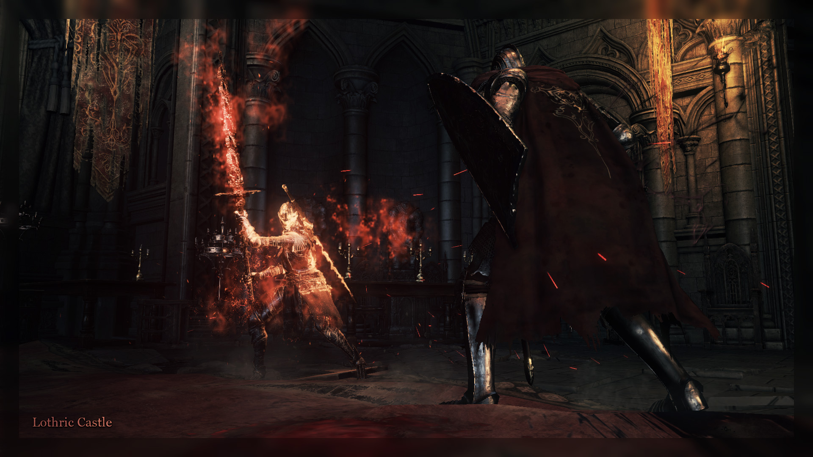The prediction was correct. Shortly, Twitch background has shown the Puppet beginning its assault at the last bastion of the world of Dark Souls 3—the Lothric Castle.
Along with the twitch image, the Father has spelled out for us the grim fate the Puppet was facing. Through #180 we have learned of two things. From the end of Chapter XVI up until this moment, this written interpretation of the events made no distinction between the times the Puppet was overcome by a surfacing apparition of one of the Father’s old puppets, or by the raging souls of Lords of Cinders. But this poem makes it clear: infernal blaze of Great Old Sin is not a transient memory. With the consumption of the third Lord, the Puppet’s own soul has crossed the point of no return, which was tangentially heralded by #169, in the depths of Irithyll Dungeon.
It’s also worth noting that the Father refers to his marionette as a “hollow thing”. It may mean that the mute knight is indeed “hollow” in the Dark Souls sense of the word—that it is technically not truly dead, but also persisting only on basic instincts rather than sophisticated thoguht. It may also mean that the Puppet is physically hollow on the inside—being a vessel of sorts, continously being filled by the souls it consumes on its arduous journey.
Dissapointingly for both of us, very little information is actually preserved from this part of the Puppeteer’s Dried Finger run. Due to a unprecedented purge of our footage from Streamable (which is a service many of us used to share in-game clips), no footage from this area, besides the boss fight, survived. Nevertheless, we can reconstruct the events down to decent details, and use our imagination to fill in the gaps.
The Puppet, engulfed by Sin’s raging flames, assaulted the Lothric Castle and disposed of Dancer of the Boreal Valley. It then immediately marched onwards, ignoring Consumed King’s Gardens for the time being. Pulled forward by the nagging of its one and only purpose, it fought through the waves of Lothric Knights mixed with us—the invaders.
Each time the Puppet has consumed a Lord and was enflamed by Sin, it grew more powerful. The Abyss Watchers left it feeble and miserable, despite enhancing its accursed spear. Aldrich, along with the remnants of Gwyndolin, gave birth to two special pyromancies as well as further enchancing its main weapon. Now, Yhorm’s hellish soul has coated both of Puppet’s weapons in its flames, and added a third pyromancy to its arsenal. The pyromancy was a mix between a Farron Dart and Seething Chaos: a quick flick of knight’s arm threw down a mine which would explode violently after several seconds. Large explosion radius already made Seething Chaos a good tool for crowd-control, and quick animations allowed to render large areas dangerous. (Though there is one note for that: as seen in the boss clip and during the later areas of the event, no matter how many Seething Chaos mines were thrown down, only two would explode. This is likely a limitation on the game’s part that the Puppeteer had overlooked.)
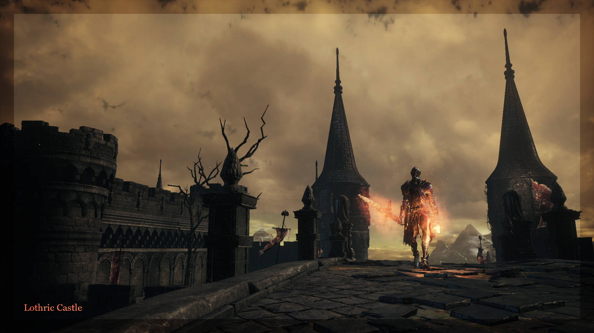The Puppet’s growing powers would have allowed it to demolish the area extremely quickly, were it not for us. Summoning limits were unlocked once again, and up to five of us were able to hunt the mute knight simultaneously. By a lucky remark left in the discord chat, we know that at one point the Puppet was facing an insurmountable challenge of attempting to defeat five fully-healed invaders, buffed by the Lothric Priests’ Sacred Oath (which, if you are unaware, is more potent than the regular Sacred Oath). The Puppet, despite now being a lot more powerful than a legitimate character, fell short of that, and was forced back to a bonfire.
Eventually, the mute knight has sterilized the lower floors of the towering castle. Inescapable as a force of nature, it disposed of the Pilgrim Butterfly which was controlled the Dragonslayer Armor and beckoned us to the bridge. #181 invokes an idea that at this moment, the Puppet was at the zenith of its power as of this part of the journey. No longer degenerated into a meek thing by the Great Old Sin’s invasive flames, but rather letting it seep through its carcass and abusing its power.
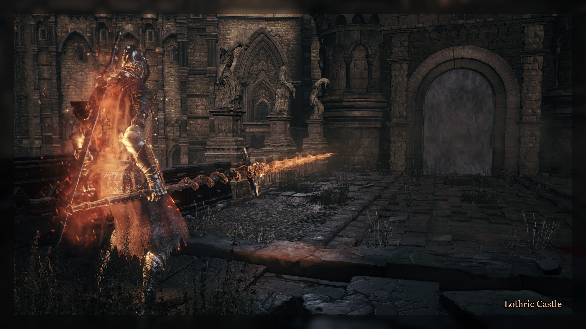Alex Roe’s haunting Night of the Hunt played on the background as the Puppet unleashed hell on us. It was generally regarded as one of the most chaotic fights of the whole event. The Puppet was relentless, pursuing its opponent (who was, as always during the boss fights, alone) until one of the fighters dropped dead. The pyromancies were thrown out very frequently, making aggression difficult and sometimes forcing us into panicked retreating. The fact that the Puppet was lagging during several points of the fight also did not help. This last part was later explained by the Puppeteer, who said: “dragonslayer arena gets terribly laggy”.
Very few succeeded in overcoming the mute knight. Yet, the Puppet’s momentary endulgence in Great Old Sin’s power was nearing its end. The Father dispels the idea that it is completely gone, though. #182 clearly states that from now on, the Puppet’s soul will keep burning as if that of a true Lord of Cinder. The consumption of Yhorm had not only brought the mute knight over this threshold, but has also acquainted it with this accursed power enough to rule over it. Per the second line, it was not the flame dying down inside the Puppet, but the Puppet subduing the flame but its force of will.
It is also curious to note that despite this image of the Puppet’s soul continuously becoming more and more like that of the Soul of Cinders/Great Old Sin, the third line of #182 states that the Puppet must not waste the flame recklessly. Does this mean that the flame of Sin could die down despite the fundamental alterations of the soul of the synthetic being?
With this question up for interpretation, the Lothric Castle had fallen into dead, sterile silence—only Puppet’s weary steps echoing through its halls.
—145—
Mute knight’s slow march, passing by Consumed King’s Gardens, has led us towards the Untended Graves—the only side-path of the game still unexplored. Now voided of the Sin’s radiant blaze, the Puppet was ready to descend into pitch blackness.
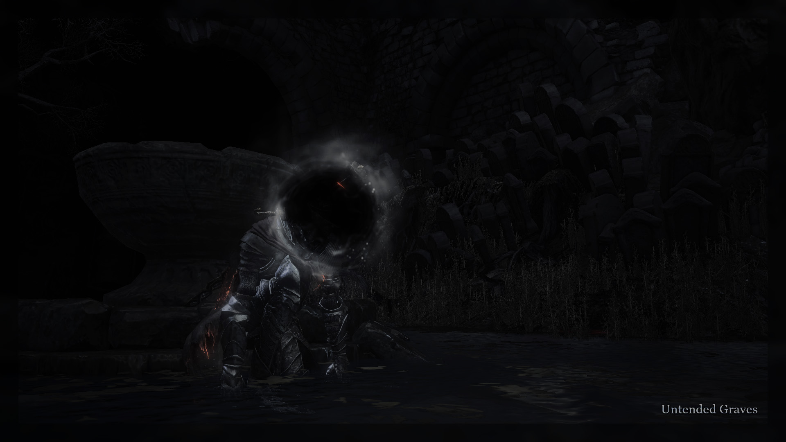Here the penultimate apparition took over the Puppet’s mind. Undoubtedly one of Father’s greatest creations, and perhaps the second most-fun-to-fight puppet—the Nameless Flame’s transient spark was upon us.
The Puppet, its head gone in a black miasma akin to that of the desecrated Harald Legion knights, awaited its opponents by the broken vessel in the center of the area. The way the bulk of the area played out was awfully similar to our very first encounter with the Nameless Flame all the way back in the beginning of February. The Puppet utilized the humanity-seedbed’s full arsenal: Onyx Blade, Ringed Knight Straight Sword and Spear, all augmented with the blackflame weapon buff. Alongside the wide melee array, the mute knight also mimicked Nameless Flame’s blackflame pyromancies. Quick and relentless fights were had all throughout the area.
Yet time passed us by in a flash, and after just a couple of us have gotten our fill of the blackened Puppet, the boss fog was approached. #183 beckoned us in, per the usual rules.
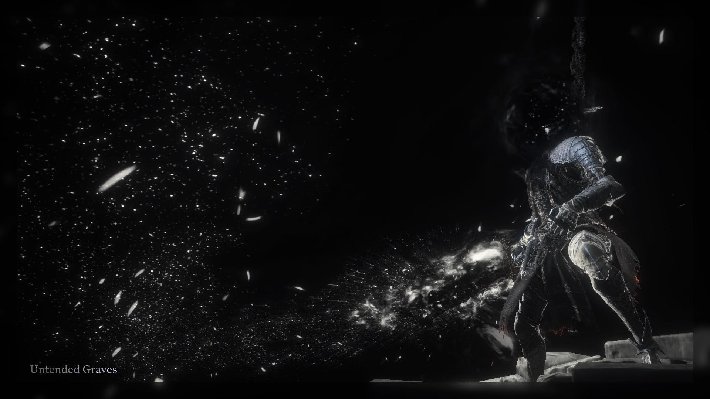Immediately you see that this boss fight was unique in comparison to all the other ones we’ve had so far. It’s certainly worth bringing up that most of the fights held here were two-on-one instead of the usual one-on-one scenario. But what has given the fight its real flavor was the location the participants were brought into. Gundyr’s plain and boring arena was completely ignored in favor of what immediately succeeded it—the ascent into the Untended Firelink Shrine. Its varied terrain gave the Puppet a narrow enough corridor to ascend towards the shrine while simultaneously fighting off two invaders and several Black Knights, which were swiftly brought into our carnage.
All this would have made for a fairly interesting boss-fight already, but there’s one more thing that made this one into something special. At the time of gathering footage, the only available clip of this fight was that of Fanboy, where the fight has ended prematurely, courtesy of the Puppeteer’s particular adoration of pits and ledges. But later on, Nosferat and Narcolept have shared their own footage from the depths of their hard drives. In them we can see what this last “thing” is: after successfully fending off the invaders and the Black Knights, the Puppet entered into the shrine and forced us along with it. To fight our epic adversary inside what is arguably the most important location of the game, which is also completely inaccessible for online—and all of this with Alex Roe’s In Death, I Am Reborn on the background? What a recipe for a memorable encounter.
#184 brought this incredible fight to an end, as the Nameless Flame’s apparition was swallowed up by the Puppet’s hunger. It’s worth noting that there was nothing said of the blackflame puppet during this whole encounter. Perhaps the Puppeteer has thought that everything that was worth saying about it was already said.
The poem paints a clear picture of the mute knight: its armor warm from the blazing Lord of Cinders-like soul within, it forces itself out of the black miasma of Humanity, and walks wearily away from the flameless Shrine. Up the cliffs of the Untended Graves, over poisonous mud of the degraded Gardens and through the still sterile halls of Lothric Castle, until at last it stands before the doors of the Grand Archives.
Here it takes a sit by the bonfire and rests for half an hour, the Puppeteer announcing it with #185 (and likely frantically running to the toilet and grabbing a bite of something in real life).
—155—
After a short respite by the fire, the Puppet arose and wearily opened up the great wooden doors leading into the Grand Archives.
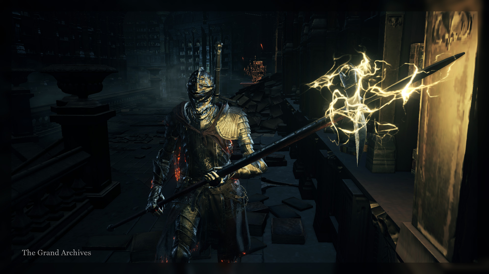This great dome, housing interminable shelves of cursed knowledge, has always been our favorite place to invade and pillage—players naturally gravitate towards SL80-SL90 when they reach this place, and that is of course the SL that we as a community favor. But precisely because this is such a hot-spot, getting into the Puppet’s world has been cumbersome during this section, with many of us repeatedly invading completely unrelated people just going through the area.
Despite that, the Archives is a place of particular interest for us. There is just one area left for the mute knight to conquer, one final Lord to consume, and one final apparition to smother. We have already entered the area, and we know the Lord whose demise draws interminably closer. Yet the final apparition was nowhere to be seen yet.
#186 began to answer this curious riddle. The final puppet, who has not yet possessed the Puppet’s mind, was Heart of Spears. This poem states it quite clearly as the apparition which “yielded flesh for monster mute”. As we recall from Chapter XV, the Father has stitched the Puppet together from the corpse of Heart of Spears (there is even poem #101, which speaks of the beginning of craftsman’s work).
Having named the final apparition, #186 immediately shuts down the idea of coming “to its homeland”. In hindsight this looks like the Puppeteer’s way of saying “this Dried Finger run will not go through the DLCs”, which he came out and said in plain text later. For lore purposes we may suppose that since the apparitions overcame the Puppet only in their respective areas, they must be tied to the geographic locations. Because the mute knight cannot visit the Ringed City, Heart of Spears’ apparition never emerges in full force.
#187 expanded upon these thoughts. It says that the Puppet’s body, while being stitched from the remains of Heart of Spears’, does not possess the same powers as it did. The unique miracles of the first Spear of the Church have been forever washed away as its maddened hollow soul was torn away from its robust carcass.
Despite that, a peculiar transformation overcame the Puppet amidst the cursed knowledge of the highest halls of Lothric. “A different tale of ancient crime” it was—a sublime, white frenzy.
Three new spells augmented the Puppet with blessed light. A small Farron Dart-like projectile, a Divine Soul Spear, and last but not least—a titanic wall of light, moving rapidly and blinding everything in the vicinity.
All spells made use of effects seen in the Twin Princes boss fight. This fact, along with the way #187 spoke of “ancient crime” and the way #188 and #189 (which, keep in mind, have not been posted yet), lead us to believe that the Puppet was indeed overcome with the Heart of Spears’ memory. But that memory was unclear, fragmented, and under the influence of Lothric has become tainted with his own “angelic” imagery. Why did Lothric have such influence over the voiceless knight? Why here and not throughout all of Lothric Castle? These questions we have no answer to.
Another curious transformation appeared in the Puppet’s character. Having ventured through the darkest depths and highest peaks of Lothric, the Puppet absorbed uncountable souls and swallowed three legendary Lords of Cinder. Recall how #182 said: “Flame rages on in cursed soul / as knight subdues it with stern will”. On this great journey, the Puppet has grown strong enough to bend the scorching blaze of Great Old Sin under its synthetic will. Now, as the Puppet knew that the end was crawling closer, it had no more reason to hold the precious embers of the Lords enchained.
Through this whole area, any aggressive move made by the Puppet would momentarily set its arms ablaze. And just as quickly as they appeared, tongues of sinful flame would be extinguished. In contrast to previous explosions of agony the Puppet experienced from the Sin’s flame, this controlled and methodical application has shown it to finally hold the reigns over this curse.
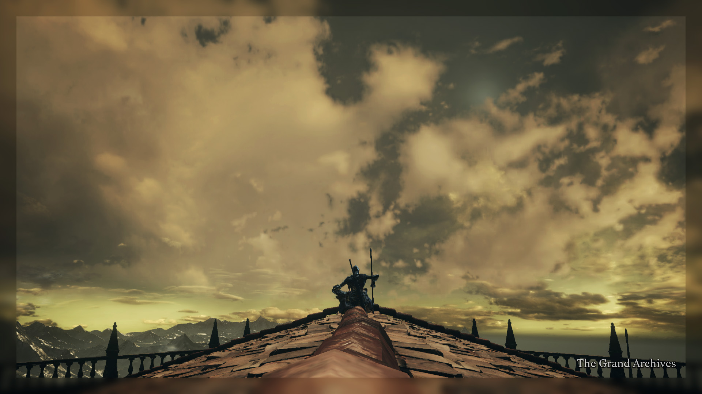Having fought its way through the dark, damp balconies of the Archives, the mute knight ascended towards its dome and, as the second Twitch background shows, oversaw the whole world. And in this overseeing, it perhaps caught a glimpse of the Ringed City somewhere infinitely faraway, beyond the horizon, for its arsenal changed once again. Under the bleak brass skies, it produced a Lucerne and Gotthard Twinswords—both belonging to the first and most unyielding defender of Fillianore’s Church.
The Puppet fell numerous times on its crawl towards the final Lord. Yet, at last, it opened the heavy creaking doors. But we, weathered spirits not succumbing to the exhaustion of this arduous journey, pursued it closely, giving it no time to prepare for the last meal.
It turned around and beckoned us, one-by-one, as the sickly and apathetic Prince Lothric watched from above.
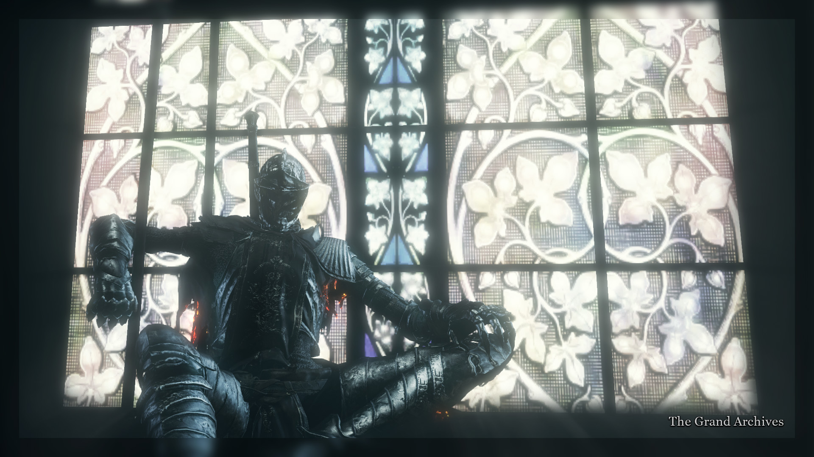(In which the Puppeteer has yet again shown us why having boss rooms as arenas for PvP would be a fantastic idea)
#188 has been mentioned already, and now we can dig a bit deeper into it. The “amalgam” of course refers to the fragmented and broken imagery of the Heart of Spears, mixed together with feverish light of Lothric. But again, how did the Puppet become afflicted with this white light? Perhaps it’s worth taking a look at what the actual game presents to us in terms of lore:
The Queen’s holy maiden Gertrude was visited by an angel, who revealed this tale to her.
Despite losing both her sight and her voice, she was determined to record the tale. Ordinary men cannot decipher her fragmentary scrawl, nor comprehend how it became the foundation of the Angelic faith of Lothric.
- Divine Pillars of Light (DSIII)
This is the only “heavenly” miracle in the game. There are two more items which utilize the same feathery particle effects, those being Lothric’s Holy Sword and Twin Princes Greatsword, but, sadly, neither of them offer anything helpful in the untangling of the Puppet’s affliction.
There is one curious detail in the description of Divine Pillars of Light—it describes Gertrude’s writing of the miracle as fragmented. This correlates with our idea of Heart of Spears’ apparition being just as broken and fragmented within the Puppet’s mind. Perhaps two broken things make one whole? The affliction remains unclear, but for the sake of the story we can imagine the Puppet coming across the Divine Pillars at the base of the archives, and the broken scratching of the miracle burning themselves into its mind.
Despite those ideas, the Puppet’s momentary affliction will remain a mystery (or by chance the Puppeteer just didn’t have the time to think this part through? That we may never know). As one by one we engaged the mute knight, and as both parties fell time and time again, the Puppet’s hunger has been growing stronger. The Lord was right there, just a couple of leaps away. The final phantom was summoned with #189, and when they fell, the feast began.
What could poor Lothric do against the Puppet? A sickly cripple resigning himself to a solitary decay away from the fire, against the thing which trampled three Lords already. Lorian, the faithful brother, would of course be of no help here. Did the brothers submit without a battle, accepting that their desire to see the fire fade away would be satisfied by the cold hands of the voiceless knight? Or did they protest and defend themselves, only to be torn to shreds for their precious blazing soul?
—164—
Lothric was gone, devoured by the synthetic knight. And thus, no more Lords remained on this Earth, and no more sidesteps were necessary on the Puppet’s journey.
Emboldened once again by the Sin’s great flames, it made its way towards Firelink Shrine, which it found crumbled and flameless, being slowly swallowed by the Dreg Heap. The Puppet knew where it had to go, and so did we.
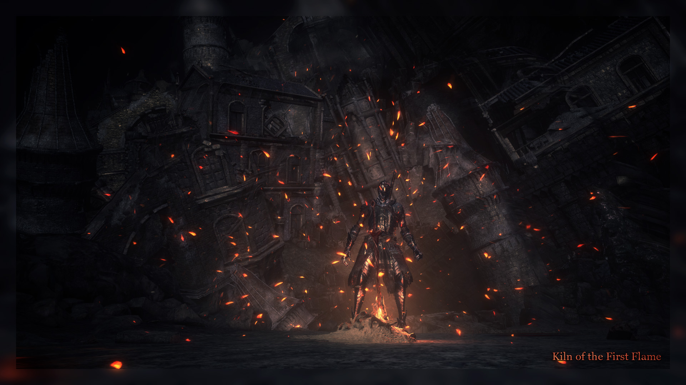Our goal is clear, for we are done.
No lords or souls are left to eat.
Great Sin of Old, your time has come!
This hellish knight will do the feat.
(these final poems will be show in full text)
The Father’s words, conveyed in #190, resounded strongly in the air. The Puppet’s exalting thing which awaited it amidst the flowering ash of the kiln. That thing, of course, being the Great Old Sin.
The Puppet marched on: its legs covered in ash, its arms in hellish flames, its armor in deep cuts and scratches—and came towards the broken archway. Did it slow down for a second, to consider what awfully titanic journey it overcame on its way to this crumbled gate? Born of the formless gray mixture of Humanity and God’s soul, imbued into a corpse which persevered unending sleep for countless eons. It has unsteadily tumbled through the straight walks of High Wall of Lothric, the twisting putrid streets of Undead Settlement. It founds its way through the Cathedral of the Deep and descended into the expansive swamps into which the mausoleum of the Abyss Watchers slowly sinks.
The Puppet has torn apart those knights bound ever still by their fanatical hatred of the Abyss, and in doing so scorched its formless soul with fires no less abominable. Yet the knight stumbled on through the cold hallways of the Catacombs, perpetually tormented by the flames burning away its unfeeling soul.
Does it recall how, after the flames subsided, it descended into the still waters of Smoldering Lake, and then came back up into the frigid winds of Irithyll? And how it went ever above that, to gulp down Aldrich, the putrid abomination someone had the mind to pronounce a Lord?
The voiceless knight, as we have come to know it, would, of course, never give any of it a second thought. Nor would it recall the blazing agony it went through in Irithyll Dungeon, nor the great dream of ancient hail at Archdragon Peak. The synthetic thing would not recollect the great feat of consuming Yhorm the Giant, nor the subsequent sterilization of Lothric Castle and Untended Graves.
The Puppet will not ponder on how it set forth through the Grand Archives, hunting down the final lord with no pity. It will not give a second thought how it became the unbreakable, unyielding herald of the end of the era.
And here it stood before the final foe, ready to take it down in barbarous, blood-chilling combat.
It could do it alone, no doubt. But it would not:
You, blood-hungry hunters of the world
endured such journey with us two!
Come with it now, and stand so bold
along the hellspawn. See it through!
We, trailing ghosts continuously appearing on the Puppet’s path, came to the very end with it. We tempered it in cruel combat, and willingly fed it our souls. Now, we were to see it through with our own eyes.
Five phantoms were summoned. Not the vengeful red, neither mindless purples, but brilliant white spirits—all ready to observe how the preternatural God of Gods, the undying flame which stagnated the world for endless eons, would be challenged by the empty thing which trekked to the ends of the world and back, consuming everything standing in its way.
The voiceless knight stepped through the archway.
The coiled sword was thrust out from the fire, warm ash falling around it. The titanic figure rose from its eternal rest.
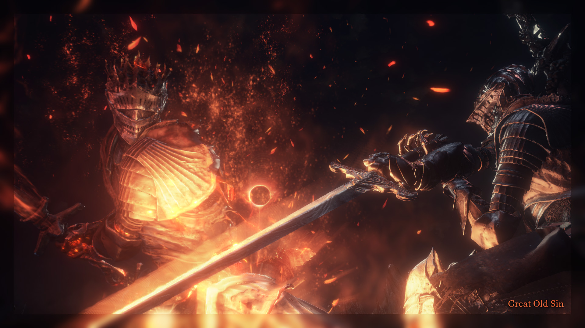Five of us fought side by side with the synthetic knight whom we nurtured for its sole purpose. Great Old Sin defended itself, every soul which has ever sacrificed itself to the Flame coming forth against us. Interminable hoard of legends breathed through the towering carcass of the Sin, its power unyielding through its endless hypostases.
No man came close to such presence. No God could be as close to a true force of nature as the Great Old Sin was. And yet the Puppet was neither. An empty mold, a husk which held no beliefs and no ambitions. Crafted by the skillful hand and tempered by the great journey, its scorching armor held steadfast against the obliterating hellfires of the God of Gods. And the unquenchable hunger inside it grew.
Great Old Sin fell. And it rose again, another hypostasis taking the place of the fallen. It fell again, and rose again. It fell, rose, fell, rose, fell, rose— And ever still the Puppet persisted. Great heroes of all eons came forth against it, each overcoming great adversity to become a part of this being. And each fell in face of the Puppet. Its accursed spear pierced their shared body, its gaping maw consumed their minds.
As the sun bled out, and the world turned dark, Great Old Sin had fallen and failed to stand up.
INTO THICK ASH THE PIECES FALL
STRONG JAW SUBDUES THE BLAZING HEAD
WORLD’S FLAME WILL NOT STAND TALL
AS KNIGHT ENGULFS ITS FINAL SHRED
Here we stood, witnessing the twilight of the gods. The thing we gave birth to became more than a puppet in the hands of a skillful artisan. The Puppet overpowered the Great Old Sin, the God of Gods, the fundamental force. We can only imagine how it felt, the endless emptiness inside it being filled with the endless minds and souls of all the warriors it tore away from the Great Old Sin and, at last, the First Flame itself.
In absorption of these endless memories, the Puppet rose from the remains of the Great Old Sin, which were resigned to eternal cold until the end of ends came forth and swallowed the whole world.
We were of course of no use to it now, as it became more than the rest of the world. But, perhaps out of a phantasmal sense of honor it may have developed during our shared journey, it beckoned us through the archway.
We were at the culmination of the whole journey. For this one unique time, the boss would not be engaged by one, two, or three people, but five.
And the Puppet has fallen each time. But each time the First Flame filled it more, and it rose back up ever stronger than it was. In the beginning it differed in no way from the flaming marionette we faced in Lothric castle. But as the fights went on, its damage rose to absurd degrees, culminating with a single neck swipe from its spear easily doing over a thousand damage.
Alongside this stupefying damage, the Puppet has also acquired passive hyper armor and extreme movement speed, which made it even more difficult to land clean hits on our target.
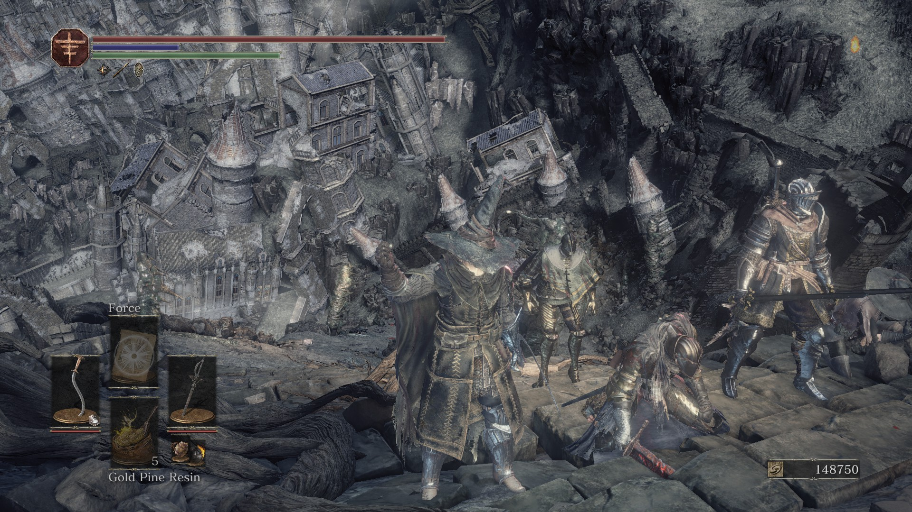Many times we were summoned, and many of us faced this all-eclipsing apparition. At first we were strong enough to take it out without losing a single phantom. But soon it became impossible, as it took all we could do to save a spirit whom the Puppet has marked for death and laid its scorching eyes upon.
(An entertaining annotation: Nosferat has at one point found the Soul of Cinders the Puppeteer had moved out of the arena during this section of the run)
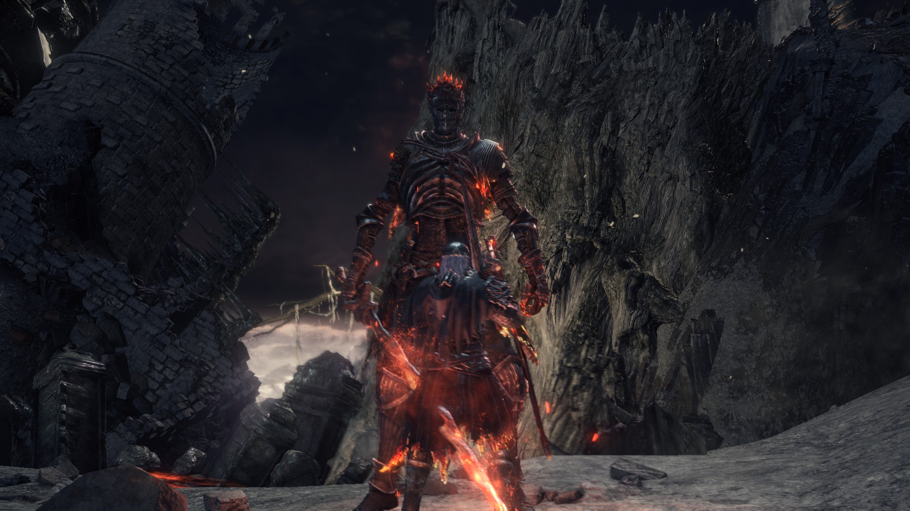AS SKY GROWS DARK IN ENDLESS NIGHT
ONE SPARK IS LEFT, UNTAMED AND BRIGHT
COME EACH ONE NOW, FOR FINAL FIGHT
SOON ENDLESS REST WILL TAKE THE KNIGHT.
1 LEFT
The voiceless knight engaged the final five. Scorching with primordial flames it fought on, yet, as it did many times before us, it fell. And as our war-loving spirits were vanishing from its world yet again, it brought itself back up, now the sole warm spark amidst the all-engulfing darkness.
This world, old and decayed,
it now, alas, no one controls.
Left standing is one richest shade
of the Darkest of Souls.
—169—
The Puppet’s great task was finished, the world was freed from the poisonous existence of the Great Old Sin. But now, has the Puppet not become the renewed Great Old Sin? Engulfing all that was the God of Gods, was it not the same ever-expanding kaleidoscope of souls which all manifest the accursed flame?
The Puppet’s nemesis is gone, but the Puppet’s journey was not over. Having become the bearer of the First Flame, it was now the cornerstone of the world. There was one thing the voiceless knight had to do now to ensure the accursed flame would not be rediscovered.
As the cold ash grew warm under its beaten down legs, the Puppet marched away from the flowering field of the Kiln, littered with uncountable swords. It marched upwards, passing the crumbling towers of Lothric as they slowly slid ever downwards into the bottomless pits below, as if the horizon has suddenly sunk under your feet.
The bearer of the First Flame has at last seen the consequences of its actions, as sun disappeared completely and the clouds grew as dark as the blackest abysses. Serene silence fell upon all lands. Was the Father satisfied, for his planned worked out brilliantly? Was he content being now the creator of what could be considered the mightiest thing to walk under these skies?
Mute knight of course never pondered about this. It went on through the rubble and the towers and mountains bowed down to its primordial presence. Eventually it came upon the shrine which was a home to many great legends and even more cowardly fools. And here, it has decided to bid farewell to us.
For the final time, the Puppeteer has beckoned us to inscribe our red signs as close to the Dark Shrine within the Untended Graves as we could. While we, some with zeal and others with melancholy, did so, the Puppet ascended through the flameless dark corridors. It went on around the five thrones which would, of course, never be of use again. It climbed the steps upwards, and entered the thin winding tower by the giant tree. At last, it passed the shaky iron gate at the other side of the thin bridge, which led from the winding staircase into the Firelink Tower.
The great tomb of the Firekeepers, was it not destined to become the Puppet’s final rest? In its great deed, did it not become just that, the closest a being can be to a Keeper of Fire?
The old elevator was still functional, and on it the Puppet rose up to the highest peak of the shrine. And there, it waited for us.
The voiceless knight said, in its own way, a personal farewell to each and every one still present. Its warm radiance was growing sluggish with the sweet thoughts of the impending slumber, and in this transience between waking and dreaming it pierced and slashed and impaled all those wishing to see it off.
Many have already found it half-asleep, though it was still wakeful enough to be roused by material means.
Each one of us, the blood-drunk war-happy bastards, said our personal farewells. The Puppet awaited one last opponent before it would slip into the sublime pleasure of slumber. Fanboy, who so eagerly followed the whole event, became the last one to see the Firekeeper in its waking shape.
As the Puppet fell, we were for the final time beckoned by the Father. “All signs by the fire”—he said—as so we placed them.
One by one we were beckoned into the dark tower. And one by one we took place on the shaky crumbled elevator. Side by side, brothers and sisters in the endless pursuit of fun through the means of war, we ascended to the bell.
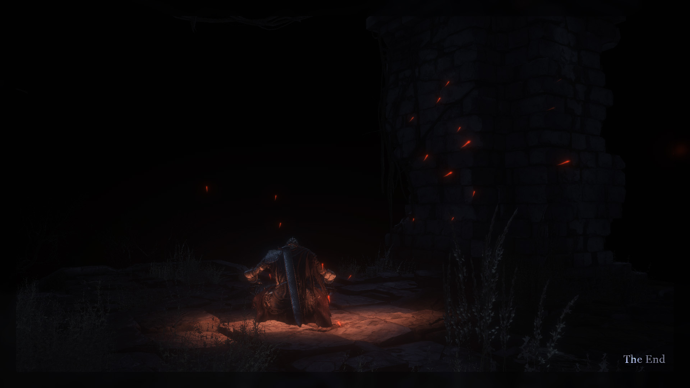There it sat. Devourer of the Great Old Sin. Slayer of the God of Gods. The Firekeeper until the end of times. The Puppet. A slender figure in broken armor, each breath radiating bright profaned sparks of the First Flame, burning dimly in the sarcophagus of its unyielding ribcage. The accursed spear, which many eons ago had carved its own heart out, was now struck deep into the stones by its figure.
We stood before it, pondering on the great journey we all underwent with this fantastic creature. Some stood tall, some collapsed. As the pagans of the ancient days, we all offered the some symbolic sacrifices to the motionless figure, drinking divine waters from sacred bottles, freeing greatest souls one could find, and leaving glowing trinkets near the knight.
Some of us turned away and left immediately, others slugged behind, sitting by the figure for great whiles. But eventually, the last war-waging spirit left the lone tower under the endless dark skies.
And there, the Firekeeper would remain, destined to become the tomb of the First Flame, now and forevermore:
Knight takes a seat under dark bell,
great deed is done, the embers fade.
It now shall rest, enchain the hell
till even time itself will fade.
-THE END-